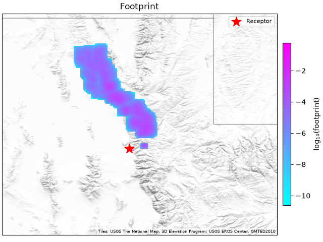
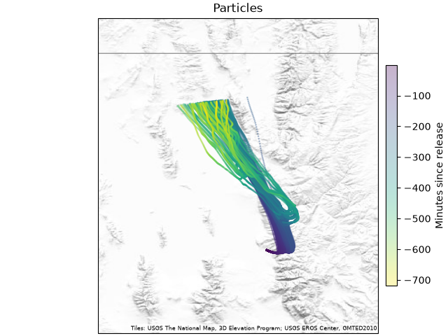
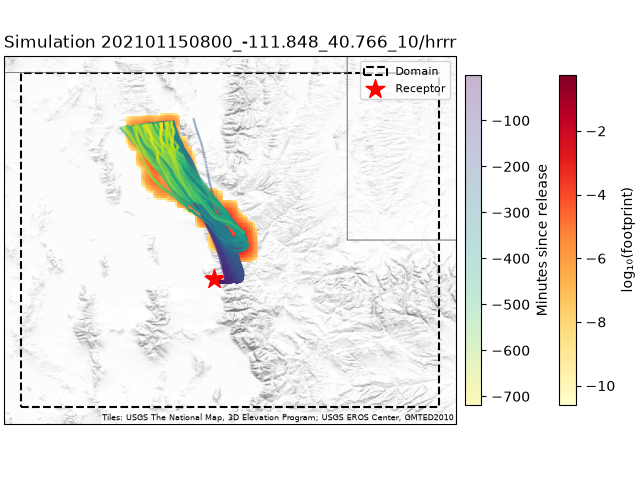
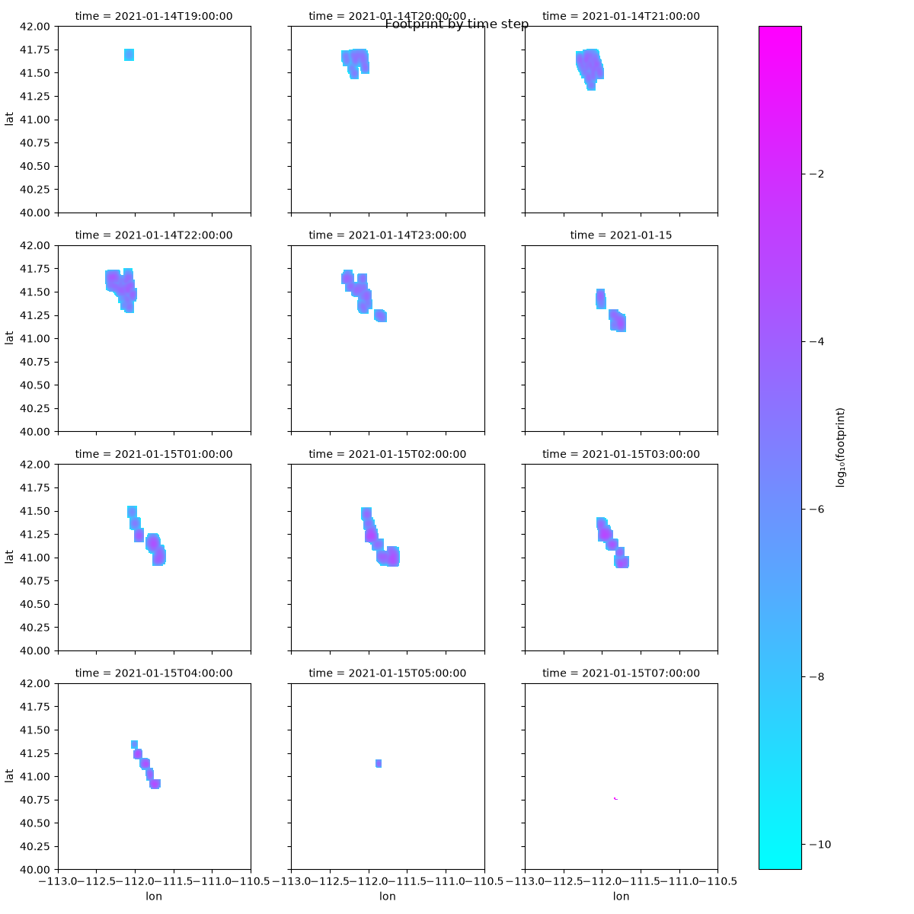
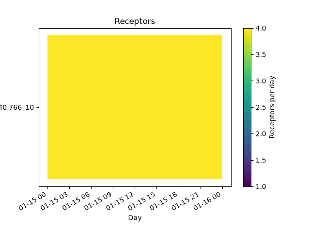
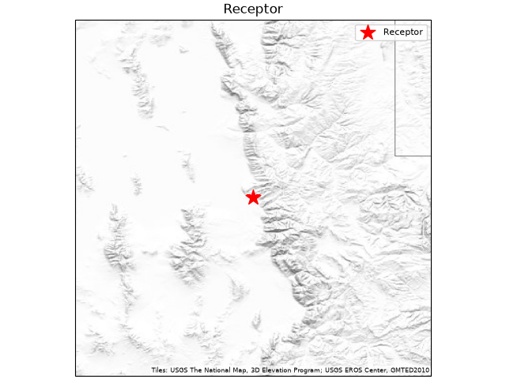
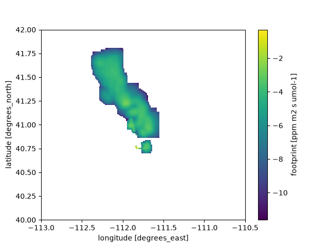

Footprints And Particles#
Each simulation is one receptor run under one variant (Projects And Variants). It has up to two results in the output directory:
the particles, where every particle went, as a Parquet file
the footprint, when the variant has a grid, as a Parquet file of the cells the particles touched
Variants that differ only in footprint settings share one set of particles.
Look at both before you trust a batch. We plot the particles of a few simulations first, because they show where the air went whatever the footprint grid, and only then load the footprints for analysis. Summing Footprints: Areas And The Jacobian sums footprints over areas, and many at once into a Jacobian.
Quick look#
Open the project, pick a simulation, and plot it:
In [1]: import stilt
In [2]: project = stilt.Project("./my_project")
In [3]: sim = project.simulation("202101150800_-111.848_40.766_10", "hrrr")
In [4]: sim.footprint.stilt.plot.map(); # footprint, summed over time
In [5]: sim.particles.stilt.plot.map(); # particle paths
In [6]: sim.plot.map(); # receptor, particles, and footprint together






A simulation is named by its receptor id and its variant. To see them all,
look at project.simulations, a DataFrame with one row per simulation:
In [7]: project.simulations[["receptor", "variant"]]
Out[7]:
receptor variant
0 202101150600_-111.848_40.766_10 hrrr
1 202101150700_-111.848_40.766_10 hrrr
2 202101150800_-111.848_40.766_10 hrrr
3 202101150900_-111.848_40.766_10 hrrr
Plotting needs the visualization extra. If cartopy is installed, maps
also show coastlines and state borders. There are a few other plots:
foot.stilt.plot.facet()draws one panel per hour.receptor.plot.map()shows where the receptor is.project.plot.availability()shows the receptor times at each location.
In [8]: sim.footprint.stilt.plot.facet();
In [9]: project.plot.availability();
In [10]: sim.receptor.plot.map();






A map takes a tiler, any cartopy tiler, to draw map tiles under the data.
The maps in these docs are drawn on shaded-relief tiles of the USGS National
Map, which are kept in the repository so that building the docs needs no
network for them. Your own maps can use the same tiles. cartopy downloads them
when the map is drawn, and cache=True keeps what it downloaded:
from cartopy.io.img_tiles import GoogleTiles
usgs = GoogleTiles(
url="https://basemap.nationalmap.gov/arcgis/rest/services/USGSShadedReliefOnly/MapServer/tile/{z}/{y}/{x}",
cache=True,
)
sim.plot.map(tiler=usgs)
Footprints#
A footprint is an xarray.DataArray:
In [11]: sim.has_footprint # True once the footprint file exists
Out[11]: True
In [12]: foot = sim.footprint # raises FileNotFoundError before that
It has dimensions (time, lat, lon), or (time, y, x) on a projected
grid. There is one map for each hour back from the receptor time (each
tres back, when the footprint settings give another length), in
units of ppm per (µmol m⁻² s⁻¹). foot.sum("time") is one map of the
whole run. Use xarray as you would on any other array:
In [13]: total = foot.sum("time") # summed over time
In [14]: last_hours = foot.sel(time=slice("2021-01-15 02:00", "2021-01-15 07:00"))
Methods that need the receptor or the grid are under foot.stilt:
In [15]: foot.stilt.receptor # the receptor
Out[15]: PointReceptor(id='202101150800_-111.848_40.766_10', lon=-111.84800, lat=40.76600, alt=10 agl)
In [16]: foot.stilt.grid # the grid it was made on
Out[16]: Grid(xmin=-113.0, xmax=-110.5, ymin=40.0, ymax=42.0, xres=0.01, yres=0.01, crs='+proj=longlat')
In [17]: foot.stilt.config # all the footprint settings
Out[17]: FootprintConfig(grid=Grid(xmin=-113.0, xmax=-110.5, ymin=40.0, ymax=42.0, xres=0.01, yres=0.01, crs='+proj=longlat'), geometry=None, cells_per_target=4.0, smooth_factor=1.0, tres='1h', transforms=[])
The receptor id is also a coordinate, foot.receptor. It stays on the
array through sums and arithmetic.
To write a footprint as a CF NetCDF file for other tools, and read one back:
In [18]: foot.stilt.to_netcdf("footprint_2021-01-15_08.nc")
Out[18]: PosixPath('footprint_2021-01-15_08.nc')
In [19]: foot = stilt.read_footprint("footprint_2021-01-15_08.nc")
The file records the receptor and the settings used to make it.
stilt.read_footprint also opens a footprint file from the output
directory, such as sim.footprint_path, with nothing else around it.
Particles#
In [20]: sim.has_particles # True once the particle file exists
Out[20]: True
In [21]: particles = sim.particles # raises FileNotFoundError before that
sim.particles is a pandas DataFrame with one row per particle per time
step.
The columns you are most likely to use:
Column |
Meaning |
|---|---|
|
Particle longitude and latitude (STILT-R’s |
|
Particle height above ground, m |
|
Minutes since release, negative for a backward run (STILT-R’s
|
|
Time of the row, UTC, built from |
|
The particle’s influence from the surface at this step, in ppm per (µmol m⁻² s⁻¹) |
|
Particle number (STILT-R’s |
|
Release height, for column and multipoint receptors (STILT-R’s
|
|
Mixed-layer height, vertical velocity spread, Lagrangian time scale, and pressure |
The Particle Table says what each column is, its units, and what a transport model must write.
PYSTILT’s methods for the particle table are under particles.stilt:
In [22]: particles.stilt.endpoints() # where each particle ends, one row each
Out[22]:
age particle ... foot_no_hnf_dilution time
63040 -334.0 1.0 ... 0.0 2021-01-15 02:26:00
74674 -547.0 2.0 ... 0.0 2021-01-14 22:53:00
65550 -359.0 3.0 ... 0.0 2021-01-15 02:01:00
55455 -282.0 4.0 ... 0.0 2021-01-15 03:18:00
59587 -308.0 5.0 ... 0.0 2021-01-15 02:52:00
... ... ... ... ... ...
49317 -247.0 196.0 ... 0.0 2021-01-15 03:53:00
50840 -255.0 197.0 ... 0.0 2021-01-15 03:45:00
63617 -338.0 198.0 ... 0.0 2021-01-15 02:22:00
69517 -421.0 199.0 ... 0.0 2021-01-15 00:59:00
64255 -344.0 200.0 ... 0.0 2021-01-15 02:16:00
[200 rows x 14 columns]
In [23]: particles.stilt.plot.map(); # map of every particle position

To open a particle file without a project:
path = (
"output/particles/settings=hrrr-a3f9c2/date=2021-01-15/"
"202101150800_-111.848_40.766_10.parquet"
)
particles = stilt.read_particles(path)
meta = stilt.particles.particles_metadata(path)
meta.receptor, meta.settings, meta.met_files, meta.realization
The file holds the receptor, the meteorology files the run read, and the
settings it ran with, the same ones as its folder’s _settings.yaml.
realization is which realization of an ensemble the file is, or
None for a single run. Output Layout lists every key.
Met at particle positions#
A transport model that writes only positions can still get the met columns
HYSPLIT writes. stilt.sampling.sample_met() reads mlht, dens,
pres or zsfc from the met files at each particle’s position and
time. Give it the files the run read and the top of its domain, which a
stored run records:
from stilt.sampling import sample_met
meta = stilt.particles.particles_metadata(sim.particles_path)
sampled = sample_met(
particles.drop(columns=["mlht", "dens"]),
meta.met_files,
columns=["mlht", "dens"],
z_top=meta.settings["z_top"],
)
How closely the sampled values match HYSPLIT’s own is on Validation.
Empty footprints#
A footprint that no particle reached is a file with no cells: the
simulation is complete, sim.has_footprint is true, and
sim.footprint is None. project.footprints() lists it in
attrs["empty"], and a Jacobian in H.empty. It is not a footprint of
zeros; Checking A Run says what it means and what to do.
Many simulations at once#
project.simulations is a table with one row per receptor under each
variant. Its columns are:
receptor, the receptor idvariant, the variant namerealization,0toN - 1for a variant declared withrealizations: N, and empty for one that runs once.time,kind, andlocationof the receptorone column for each extra column of
receptors.csv
Select rows the way you would in pandas, then hand the selection to the project to load its results:
In [24]: sims = project.simulations
In [25]: morning = sims[
....: (sims.variant == "hrrr")
....: & sims.time.between("2021-01-15 06:00", "2021-01-15 09:00") # both ends included
....: ]
....:
In [26]: footprints = project.footprints(morning) # one dataset: receptor, hour, lat, lon
In [27]: particles = project.particles(morning) # one table, with receptor and variant columns
Leave the selection out to load every simulation. Any table with
receptor and variant columns works as a selection, such as your
observations merged with sims, or a polars or pyarrow table, and so
does a boolean mask over project.simulations.
The footprints of one variant come back as one xarray.Dataset
with dimensions (receptor, hour, lat, lon). Receptors at different
times cannot share a time axis, so they line up on hour: the hours
after each receptor’s time, where a backward run’s first hour is -1. With
other layers the dimension is named for the unit tres is written in
(day for 1D, minute for 15min) and counts in it. The
time coordinate gives the clock time each receptor’s hours start:
In [28]: import numpy as np
In [29]: rid = morning.receptor.iloc[0] # the first receptor
In [30]: mean = footprints.foot.sum("hour").mean("receptor") # the mean footprint
In [31]: np.log10(mean.where(mean > 0)).plot(); # most cells are 0: use a log scale
In [32]: footprints.foot.sel(receptor=rid) # one receptor's hours
Out[32]:
<xarray.DataArray 'foot' (hour: 14, lat: 200, lon: 250)> Size: 3MB
dask.array<getitem, shape=(14, 200, 250), dtype=float32, chunksize=(14, 200, 250), chunktype=numpy.ndarray>
Coordinates:
* hour (hour) int64 112B -14 -13 -12 -11 -10 -9 -8 -7 -6 -5 -4 -3 -2 -1
time (hour) datetime64[us] 112B 2021-01-14T16:00:00 ... 2021-01-15T0...
* lat (lat) float64 2kB 40.01 40.02 40.02 40.03 ... 41.98 41.98 41.99
* lon (lon) float64 2kB -113.0 -113.0 -113.0 ... -110.5 -110.5 -110.5
receptor <U31 124B '202101150600_-111.848_40.766_10'
Attributes:
units: ppm m2 s umol-1
long_name: footprint
grid_mapping: crs
In [33]: footprints.time.sel(receptor=rid) # and when they start
Out[33]:
<xarray.DataArray 'time' (hour: 14)> Size: 112B
array(['2021-01-14T16:00:00.000000', '2021-01-14T17:00:00.000000',
'2021-01-14T18:00:00.000000', '2021-01-14T19:00:00.000000',
'2021-01-14T20:00:00.000000', '2021-01-14T21:00:00.000000',
'2021-01-14T22:00:00.000000', '2021-01-14T23:00:00.000000',
'2021-01-15T00:00:00.000000', '2021-01-15T01:00:00.000000',
'2021-01-15T02:00:00.000000', '2021-01-15T03:00:00.000000',
'2021-01-15T04:00:00.000000', '2021-01-15T05:00:00.000000'],
dtype='datetime64[us]')
Coordinates:
* hour (hour) int64 112B -14 -13 -12 -11 -10 -9 -8 -7 -6 -5 -4 -3 -2 -1
time (hour) datetime64[us] 112B 2021-01-14T16:00:00 ... 2021-01-15T0...
receptor <U31 124B '202101150600_-111.848_40.766_10'
Attributes:
standard_name: time
axis: T


The values are read from the files only when a computation needs them, a
day’s receptors at a time, so opening a month of footprints is quick.
Loading them all at once takes about 35 MB per footprint on a 300 by 300
grid over 24 hours. Select one variant first, as above; a selection of
several raises an error. Receptors whose footprint is empty are listed in
footprints.attrs["empty"], and those not run yet in
footprints.attrs["missing"].
For one receptor, project.simulation(rid, "hrrr").footprint is its
footprint as a xarray.DataArray with absolute times, which the
foot.stilt methods work on.
To sum a selection’s footprints onto your flux cells, as one matrix, use
project.jacobian (Summing Footprints: Areas And The Jacobian).
The particles come back as one table, so pandas can group them:
In [34]: particles.groupby("receptor")["foot"].sum()
Out[34]:
receptor
202101150600_-111.848_40.766_10 151.455553
202101150700_-111.848_40.766_10 169.614410
202101150800_-111.848_40.766_10 233.348457
202101150900_-111.848_40.766_10 289.342312
Name: foot, dtype: float64
A simulation whose result does not exist yet is left out. Loading
particles takes 10 to 20 MB per simulation. For thousands of simulations,
read the particles/ folder of the output directory with pyarrow,
DuckDB, or polars instead. To find a single file, use
sim.footprint_path or sim.particles_path.
To work with one simulation of a selection, look it up by its row:
In [35]: for receptor, variant in morning[["receptor", "variant"]].itertuples(index=False):
....: sim = project.simulation(receptor, variant)
....:
The extra columns of receptors.csv select one satellite scene or one
site:
scene = sims[(sims.variant == "hrrr") & (sims.scene == "A")]
ensemble = sims[sims.variant == "hrrr-err"] # every realization of every receptor
To see what is left to do:
In [36]: project.incomplete() # the simulations that are not complete
Out[36]:
Empty DataFrame
Columns: [receptor, variant, realization, model, time, kind, location]
Index: []
In [37]: st = project.status() # every simulation, with six more columns
In [38]: st.state.value_counts()
Out[38]:
state
complete 4
failed 0
interrupted 0
pending 0
Name: count, dtype: int64
In [39]: st[st.state == "failed"] # the failed simulations, and why
Out[39]:
Empty DataFrame
Columns: [receptor, variant, realization, model, time, kind, location, particles, footprint, state, step, reason, message]
Index: []
In [40]: project.status(morning) # the same, for a selection
Out[40]:
receptor variant ... reason message
0 202101150600_-111.848_40.766_10 hrrr ... <NA> <NA>
1 202101150700_-111.848_40.766_10 hrrr ... <NA> <NA>
2 202101150800_-111.848_40.766_10 hrrr ... <NA> <NA>
3 202101150900_-111.848_40.766_10 hrrr ... <NA> <NA>
[4 rows x 13 columns]
None failed here, so the table of failed simulations is empty.
status() adds a particles and a footprint column that say
whether each result exists, and a state column: complete,
failed, interrupted, or pending. For a failed simulation,
step, reason, and message say why. Checking A Run explains
each state and reason. status() opens no result file, so it is quick
on a large project.
Particles in trajan and other CF tools#
sim.particles.stilt.to_cf_trajectories() returns the particles as an
xarray.Dataset that follows the CF-1.10 conventions for
trajectories, which trajan,
cf-xarray, and other tools that read CF trajectory files open:
In [41]: ds = sim.particles.stilt.to_cf_trajectories()
In [42]: ds
Out[42]:
<xarray.Dataset> Size: 17MB
Dimensions: (trajectory: 200, obs: 806)
Coordinates:
* trajectory (trajectory) int32 800B 1 2 3 4 5 ... 197 198 199 200
time (trajectory, obs) datetime64[ns] 1MB 2021-01-15T08:...
lon (trajectory, obs) float64 1MB -111.8 -111.8 ... nan
lat (trajectory, obs) float64 1MB 40.77 40.77 ... nan nan
zagl (trajectory, obs) float64 1MB 13.15 16.08 ... nan nan
Dimensions without coordinates: obs
Data variables:
age (trajectory, obs) float64 1MB -1.0 -2.0 ... nan nan
foot (trajectory, obs) float64 1MB 0.05546 0.03384 ... nan
mlht (trajectory, obs) float64 1MB 150.0 150.0 ... nan nan
pres (trajectory, obs) float64 1MB 860.8 860.3 ... nan nan
dens (trajectory, obs) float64 1MB 1.093 1.092 ... nan nan
samt (trajectory, obs) float64 1MB 1.0 1.0 1.0 ... nan nan
sigw (trajectory, obs) float64 1MB 0.001 0.001 ... nan nan
tlgr (trajectory, obs) float64 1MB 1.321e+04 ... nan
foot_no_hnf_dilution (trajectory, obs) float64 1MB 0.02121 0.02121 ... nan
Attributes:
Conventions: CF-1.10
featureType: trajectory
title: PYSTILT particle trajectories
source: PYSTILT particle table
history: Converted from a PYSTILT particle table
Write it with xarray.Dataset.to_netcdf(). A table from
stilt.run_trajectories() works the same way: it has the time column
too.
Each particle is one trajectory. The coordinates are:
trajectoryThe particle number, marked
cf_role: trajectory_id.timeThe particle table’s
time, in UTC.lon,latLongitude and latitude in degrees.
zaglHeight above ground in meters (
standard_name: height).
age, the minutes since release, is a data variable, and so is every other
numeric column of the table (foot, mlht, …). The columns PYSTILT
and HYSPLIT write have units and long names; another column is kept without
units. A table with several realizations is refused: select one first,
particles[particles.realization == k].
CF stores trajectories in several ways (CF-1.10, appendix H.4). This is the
incomplete multidimensional array: every variable has dimensions
(trajectory, obs), and time is a variable of its own along both.
It fits a run because every particle is written at the same output steps,
so obs counts steps from the release. A particle that leaves the
meteorology domain stops early, and its row ends with missing values. obs
runs from the release onward, so in a backward run time decreases along
obs. In the NetCDF file time is stored as minutes since the earliest
time, with NaN where a trajectory has ended.
trajan reads the file through its traj accessor:
import trajan # registers ds.traj
import xarray as xr
ds.to_netcdf("trajectories.nc")
ds = xr.open_dataset("trajectories.nc", decode_timedelta=False)
ds.traj.plot()
decode_timedelta=False keeps age in minutes. Without it, xarray
releases before 2026 read a variable in minutes as a duration and warn that
this will change.
Footprints for openghg#
sim.footprint.stilt.to_paris(sim.particles) returns the footprint in the
PARIS format, the NetCDF layout openghg reads with source_format="paris".
openghg can then combine it with its fluxes and boundary conditions as it
does footprints from NAME and FLEXPART. The footprint must have hourly layers
(tres: 1h, the default) on a longitude and latitude grid and be backward.
In [43]: paris = sim.footprint.stilt.to_paris(sim.particles)
In [44]: paris
Out[44]:
<xarray.Dataset> Size: 11MB
Dimensions: (time: 1, latitude: 200, longitude: 250,
resolution: 24, height: 20)
Coordinates:
* time (time) datetime64[ns] 8B 2021-01-15T09:00:00
* latitude (latitude) float64 2kB 40.01 40.02 ... 41.98 41.99
* longitude (longitude) float64 2kB -113.0 -113.0 ... -110.5
* resolution (resolution) float32 96B 0.0 1.0 2.0 ... 22.0 23.0
* height (height) float64 160B 500.0 1.5e+03 ... 1.95e+04
Data variables:
srr (time, latitude, longitude) float64 400kB 0.0 ... 0.0
srr_time_resolved (time, latitude, longitude, resolution) float64 10MB ...
srr_residual (time, latitude, longitude) float64 400kB 0.0 ... 0.0
particle_locations_n (time, height, longitude) float64 40kB 0.0 0.0 ... 0.0
particle_locations_e (time, height, latitude) float64 32kB 0.0 0.0 ... 0.0
particle_locations_s (time, height, longitude) float64 40kB 0.0 0.0 ... 0.0
particle_locations_w (time, height, latitude) float64 32kB 0.0 0.0 ... 0.0
Attributes:
Conventions: CF-1.8
model: STILT
source: PYSTILT footprint
receptor: 202101150900_-111.848_40.766_10
history: Converted from a PYSTILT footprint
openghg stores a time-resolved footprint along H_back, hours back from
the footprint’s time, and pairs H_back = k with the flux hour that
starts k hours before it. The footprint’s time is the receptor time.
The first layer of a backward run, layer -1, covers the hour before the
receptor time, so it goes to H_back = 1. With the receptor at 18:00:
|
Flux hour openghg pairs it with |
PYSTILT layer |
|---|---|---|
0 |
18:00 to 19:00 |
none, after the observation; always zero |
1 |
17:00 to 18:00 |
-1 |
2 |
16:00 to 17:00 |
-2 |
23 |
19:00 to 20:00 the day before |
-23 |
Layers -24 and earlier are summed into srr_residual, which openghg
multiplies by a monthly mean flux, and srr is the sum of all layers. Only
23 hours are resolved, not 24: openghg reads the resolution axis as a
time span and keeps only its hours within a day, so a 24th hour would read as
0. The numbers are PYSTILT’s: ppm per (µmol m⁻² s⁻¹) is the same quantity as
the PARIS units, (mol/mol)/(mol/m2/s).
In [45]: per_hour = paris.srr_time_resolved.sum(["latitude", "longitude"])
In [46]: per_hour.isel(time=0).values[:4] # H_back 0 is empty; 1 is layer -1
Out[46]: array([0. , 1.08723988, 0.01245038, 0. ])
In [47]: float(paris.srr.sum() - paris.srr_time_resolved.sum() - paris.srr_residual.sum())
Out[47]: 0.0
The layers are found from each layer’s time, its start, and not from the
name of the layer dimension, so one receptor of project.footprints().foot
works as well as sim.footprint: select it with
footprints.foot.sel(receptor=rid).
openghg also expects particle_locations_n, _e, _s and _w: the
fraction of particles that first left the footprint grid through each edge, by
grid cell along the edge and by 1 km height layer from the ground to 20 km.
Giving the particles adds them, found with
grid_exits(). A particle that never
left the grid counts nowhere, so the four fractions add up to the share that
left. Without particles, to_paris leaves the four variables out, and
openghg refuses the file unless it is told not to expect them. The share of
particles that left the grid:
In [48]: float(sum(paris[f"particle_locations_{e}"].sum() for e in "nesw"))
Out[48]: 0.0
A PARIS file holds one site, with one entry along time for each receptor
time. Convert each receptor, concatenate along time, write the file, and
add it to openghg’s object store:
import xarray as xr
ds = xr.concat(
[sim.footprint.stilt.to_paris(sim.particles) for sim in sims],
dim="time",
combine_attrs="drop_conflicts",
)
ds.to_netcdf("WBB-10magl_STILT_HRRR_SLV_co2_202401.nc")
from openghg.standardise import standardise_footprint
standardise_footprint(
filepath="WBB-10magl_STILT_HRRR_SLV_co2_202401.nc",
source_format="paris",
site="wbb",
domain="slv",
model="STILT",
inlet="10m",
met_model="hrrr",
species="co2",
time_resolved=True,
)
openghg is not a dependency of PYSTILT: it needs Python 3.13 or older and
older versions of pandas and numpy. Install it into its own environment with
pip install openghg.
Without PYSTILT#
Output Layout describes every file and metadata key, for a reader in another language.
The output directory is a set of Parquet files in folders named
settings=... and date=..., which many tools read as columns. With
DuckDB, from Python, R, or its own shell, a
question about thousands of simulations is one query:
-- footprints per settings folder and day
SELECT settings, date, count(DISTINCT receptor) AS footprints
FROM read_parquet('output/footprints/*/*/*.parquet', hive_partitioning = true)
GROUP BY settings, date
ORDER BY settings, date;
-- the total influence of each receptor's footprint
SELECT receptor, sum(foot) AS total
FROM read_parquet('output/footprints/settings=hrrr-93278c/*/*.parquet', hive_partitioning = true)
GROUP BY receptor;
-- where each particle of one day's receptors ended up
SELECT receptor, particle, arg_min(lon, time) AS lon, arg_min(lat, time) AS lat
FROM read_parquet('output/particles/settings=hrrr-a3f9c2/date=2021-01-15/*.parquet', hive_partitioning = true)
GROUP BY receptor, particle;
A footprint file holds the cells the particles reached, as hour,
y, and x (the cell’s row and column in the grid that the folder’s
_settings.yaml gives) and foot. An empty footprint is a file with
no rows, so a count of rows leaves it out. An ensemble’s folders have a
realization=k level as well, so its files are one folder deeper
(*/*/*/*.parquet) and realization is a column.